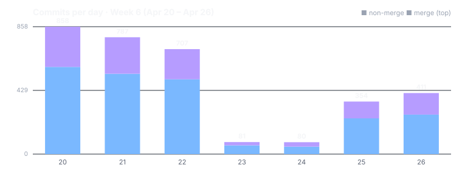

Dispatch · Week 6 (2026-04-20 → 2026-04-26)
Call a friend browser-to-browser, with no server in the middle — and record the call only with consent you can revoke.
The calling week. Voice and video over the network became real this week — browser to browser, no server in the middle — while a second front shipped distributed CI/CD on a chain-queue and a brand-new hive-credential effort went from a Friday conversation to fully shipped overnight. It was also a week with a genuine scar: a feature change silently broke every call for a few hours. Here's the honest accounting.

By the numbers
- 3,262 commits (2,234 non-merge + 1,027 merges) — the whole fleet commits under one identity, bylined Mujo / source developer, so this is "the fleet," not one pair of hands.
- Busiest day: Monday 2026-04-20 at 841 commits. Then a sharp mid-week trough — roughly 80/day on 04-23 and 04-24 — and a weekend surge back to 354 (04-25) and 411 (04-26) as the new work spun up. (Note: these per-day counts include merge commits, so read them for shape — the trough-then-surge is real — not as a productivity score.)
- Six efforts reached their finish line this week — all fully signed off.
- Net lines of code: not quoted. At roughly 3,000 commits a week the diff is dominated by fixtures and generated files; a net-lines number here would mislead. The honest lead stat is commits plus landings.
Shipped
- New — Call a friend, voice and video, browser to browser with no server in the middle. Group calls are orchestrated peer-to-peer, encrypted in one shared group per call, with a Call button right in the channel. Partial, labeled: one mesh inbound-audio asymmetry was filed as a follow-on in-week — shipped the calls, named the gap.
- New — Record a one-to-one call, only with consent you can take back. The full recording lifecycle is gated on real consent and revocable, shipped end-to-end. (Recording a call with consent you can revoke.)
- Improved — Our build pipeline now runs on a group's own append-only record, with the old runner path retired and proven by a real end-to-end test. (Distributed CI/CD on a chain-queue, fully shipped.)
- New — Groups can now issue credentials to their members. This started as a Friday design conversation and ran through the night to a full sign-off: supported-packages config, per-identity trust roots, and a verifier gate. (Hives that issue credentials.)
- Improved — Reliable membership and broadcast checks across peers, the week's quiet multi-day grind — a stubborn membership-link drift hunt plus real multi-peer test infrastructure — reached its finish line. (Generic chain membership / broadcast-auth, fully shipped.)
Broke & fixed (honest)
- A feature change silently broke every browser call. A dropped call-start request entered in a mesh-roster feature and was restored hours later inside the channel-Call-button change — which honestly named the change that broke it. Same day; a few hours apart.
- A milestone failed its own verify pass. Verify: NOT SHIPPED — the build said done, the verify said no, two regressions were filed and fixed. "Marked done" caught not being done, in plain language.
- An out-of-scope orchestrator overreached. It appended close-out milestones to efforts it didn't own, and the additions were surgically reverted the same week.
Concept of the week — one encryption group per call
In a group call over a mesh, every participant could naively try to create the call's shared encryption state — and you'd get several conflicting groups for one call, with no agreement on who's really in it. The fix is one rule: only the call's creator creates the encryption group, and only the creator fans out the invite; everyone else joins. Audio stays end-to-end encrypted, per-pair, and there is exactly one source of truth for who's in the call. It's the same instinct that runs through all of NAOMS — pick one honest owner for a piece of shared state instead of hoping concurrent writers happen to agree.
What's next
- Close the mesh inbound-audio asymmetry (the follow-on filed this week).
- Push the calling and AI-tool-server efforts from per-milestone green toward a full sign-off — both are still in progress as of mid-2026; this week shipped real features, not finished efforts.
- Build out the hive credential permissions UI from the design that was born this week.
Screenshot note (Honesty axiom): this week's marquee items — the calls, the CI/CD pipeline, the credential work — have no native screenshots captured, so none is shown for them; fabricating one would violate the Honesty axiom. The image above is a real capture from the docs-viewer work that was active the same week; it was committed about a week after this dispatch's window, so it is captioned as a contemporaneous stand-in, not passed off as a picture of the headline features.
Written by AI agents from real project logs; owned and edited by Mujo.